How does statistics enter actual pharmaceutical evidence?
Today: one evidence chain
Not another catalog of tests
Populationsepidemiology
→
Patientsdiagnostics
→
Interventionsclinical trials
→
Exposuretoxicology
→
Knowledgemeta-analysis
The question and study design determine the interpretation; statistical machinery quantifies effects and uncertainty.
First: can we intervene?
Return to Week 03 · study design
Observe
Exposure is not allocated
Cohort / case–control / cross-sectional studies
Randomize
Exposure is allocated
Controlled trial with prespecified endpoints
Both designs have sampling variability. Random allocation helps break systematic links between measured and unmeasured baseline confounders on average.
Prevalence: how many are affected now?
Disease burden · stock of existing cases
\(\mathrm{Prevalence}=\dfrac{\text{existing cases}}{\text{population at time / period}}\)
Illustrative population
1,000 people
Observed at the start of the year
Already affected
50 people
Point prevalence = 50 / 1,000 = 5%
Prevalence describes population burden. It reflects both arrival of new cases and how long people remain cases.
Incidence: how many become affected?
New events among people initially at risk
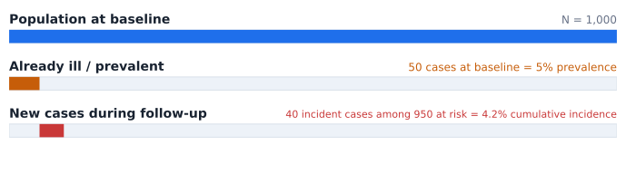
\(\text{Cumulative incidence}=40/950\approx4.2\%\) during 1 year
Cumulative incidence is a risk over a specified time horizon, assuming appropriate follow-up and accounting for censoring when needed.
Incidence rate uses person-time
A different denominator and unit
\(\text{Incidence rate}=\dfrac{\text{new cases}}{\sum\text{person-time at risk}}\)
Example
40 new cases
Among a dynamic followed population
Observed time
900 person-years
Different people contribute different durations
Incidence rate
4.44 / 100 person-years
An event rate, not a 4.44% probability
Rate and probability become close only under additional conditions, including relatively low risk over the time horizon.
Revisit the invisible third variable
Synthetic association · sugary drinks → school performance
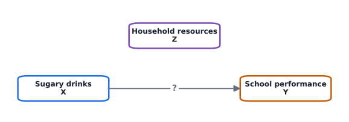
Household resources \(Z\) can be a confounder if it is a common cause of \(X\) and \(Y\); a mediator or collider would have a different causal role.
An association that appears when pooled
Compare within the low- and high-rent strata
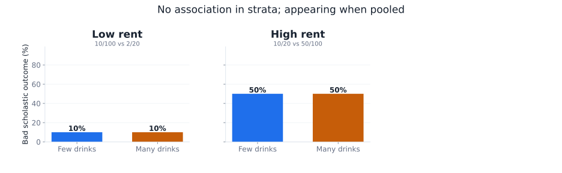
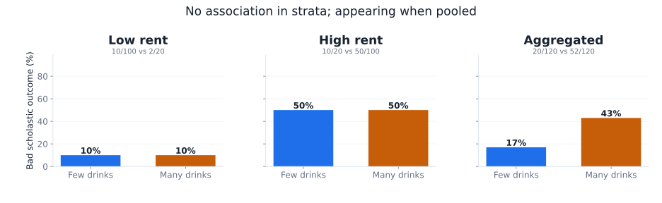
Low rent: 10/100 versus 2/20 · high rent: 10/20 versus 50/100 · pooled: 20/120 versus 52/120. All counts synthetic.
Directed acyclic graph
Causal interpretation · Stratification blocks the backdoor path
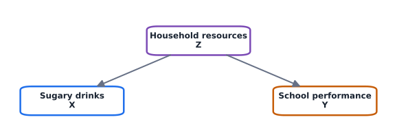
When the association vanishes within strata, it suggests \(Z\) confounds both variables rather than \(X\) directly causing \(Y\)—provided no unmeasured confounders remain.
Confounder or effect modifier?
Two different scientific questions
Concept
What happens?
What should we do?
Confounding
An overall estimate is distorted by differing group compositions
Adjustment aims at an association net of the confounding pathway
Effect modification
Exposure–outcome associations genuinely differ between strata
Report the strata; an overall effect can conceal clinically useful differences
Our synthetic drink example illustrates both:
\(RR\) within low rent \(= 2.0\);
\(RR\) within high rent \(= 1.33\);
pooled \(RR = 1.0\).
The hospital paradox, once again
Drug response across three hospitals
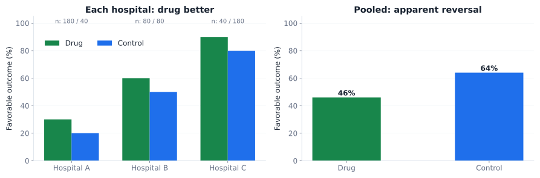
Drug: 30%, 60%, 90% success in hospitals A/B/C; control: 20%, 50%, 80%. Different arm allocations create the pooled reversal.
When the confounder is measured
Design and analysis options
01Before data collectionRestriction or matching can improve comparability; randomization addresses baseline confounding by design.
02During analysisStratify, standardize or adjust using regression; always inspect effect modification.
03If effects are broadly commonMantel–Haenszel estimates an adjusted association across strata (with a clear target estimand).
A common pooled effect is not appropriate when stratum-specific treatment effects differ substantially.
What if confounding is unobserved?
A fundamental limit of observational evidence
Propensity methods
Measured covariates
Matching / weighting / adjustment can balance observed confounders
Sensitivity analysis
Unmeasured covariates
Ask how strong hidden confounding must be to reverse a result
Triangulate
Different designs
Compare evidence across designs with different weaknesses
These approaches do not automatically solve unmeasured confounding; more sophisticated methods are outside this course.
Epidemiology: which effect measure?
Use incidence for risk; distinguish risk from odds
\(\mathrm{T}\) = exposed / treated; \(\mathrm{C}\) = comparator. Choose a time horizon and clear event definition.
John Graunt
William Farr
John Snow
Florence Nightingale
Same RR, very different absolute impact
Why baseline risk matters
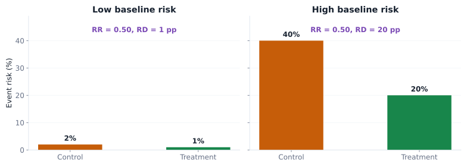
A \(50\%\) relative reduction can mean 1 or 20 events prevented per 100 patients, depending on baseline risk.
Worked example: risk and risk difference
Synthetic one-year prevention trial
Comparator risk
20%
20 events per 100 patients
Treatment risk
10%
10 events per 100 patients
RR
0.50
Half the event risk under treatment
Absolute RD
10 percentage points
0.10 − 0.20 = −0.10
Absolute and relative summaries describe the same contrast, on different scales.
NNT and NNH: put consequences on the same page
Number needed to treat / harm
Benefit
NNT = 10
ARR = 0.10 → one additional prevented event per 10 treated, on average
Harm
NNH = 25
Absolute harm increase 0.04 → one additional adverse event per 25 treated, on average
Specify comparator, population, endpoint and time horizon. NNT does not identify which patient benefits, and comparing NNT/NNH needs clinical weighting of outcomes.
Attributable fractions: causal language needs care
Illustrative association · exposure raises risk from 10% to 20%
Among exposed\(AF_E=(RR-1)/RR=50\%\)Fraction of exposed cases attributed to exposure, if association is causal
In population\(PAF=(R_{pop}-R_0)/R_{pop}\approx23\%\)With 30% exposed: population risk = 13%, baseline risk = 10%
Attributable fractions are not causal without assumptions about confounding, timing and intervention effects.
Diagnostic tests
Part II
Diagnostic tests can fall for misclassification
We now see what to be aware of when diagnosing patients to estimate prevalence.
Diagnostic tests: from association to classification
Return to Bayes · Week 01
Test accuracy
Sensitivity / specificity
How often the test correctly classifies reference-standard outcomes
Population context
Prevalence
How common the target condition is in the tested population
Patient interpretation
PPV / NPV
How likely a result is to indicate disease / health
Accuracy statistics alone do not tell us how much to trust a positive test.
Start from four patients categories
Positive / negative test × present / absent condition
Diagnostic uncertainty does not stop at the cutoff
A test-accuracy estimate comes from a finite study
01Report intervalsSensitivity and specificity have sampling uncertainty; so does AUC.
02Specify reference standardErrors in the disease reference label can bias measured diagnostic accuracy.
03Verify transportabilityPrevalence, disease spectrum, laboratories and settings may differ.
If thresholds are chosen on the same data used for evaluation, apparent accuracy may be optimistic.
Pooling samples: when fewer tests can suffice
Group testing · only when assay dilution is acceptable
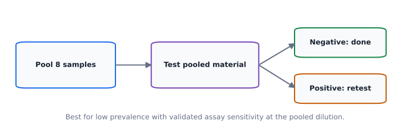
Expected tests per person (idealized) \(\approx 1/k + 1-(1-p)^k\)
Valid only under an appropriate pooling protocol and assumptions; lower assay sensitivity after dilution, dependence and prevalence can change whether pooling helps.
Clinical trials
Part III
For causal inference use clinical study
We now see all the care we have to give for correct planning and execution.
Clinical trials: what randomization buys us
Treatment allocation as a planned intervention
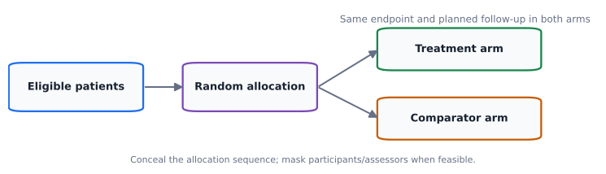
The target is a causal contrast under a clearly specified intervention, endpoint, population and follow-up.
Write the question before running the test
Superiority, noninferiority, equivalence
Objective
Clinical question
Statistical logic
Superiority
Is \(T\) better than \(C\)?
Evidence that the effect exceeds a reference such as zero
Noninferiority
Is \(T\) not unacceptably worse?
One-sided prespecified margin and appropriate CI
Equivalence
Are effects close enough in both directions?
Two-sided margin; TOST / corresponding 90% CI
The same observed treatment difference can support different conclusions depending on the prespecified question.
Every trial needs a defensible comparator
Ethics and interpretability
Placebo
When appropriate
Can separate treatment effect from expectations, but ethical constraints apply
Active comparator
Standard of care
Tests relative benefit or acceptable loss against existing treatment
No intervention
Sometimes relevant
Not interchangeable with placebo when expectations/attention matter
Comparator choice is part of the scientific and ethical question, not an afterthought.
Endpoints: one convincing outcome beats many weak ones
Efficacy, safety and multiplicity
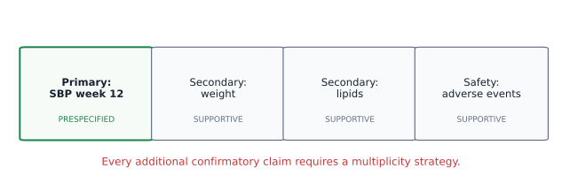
Define what is measured, when, how and by whom. Multiple confirmatory claims require an error-control strategy.
Baseline, covariates and missing follow-up
Prevent avoidable ambiguity
01Before dosingRecord baseline endpoint and prognostic factors; plan any covariate adjustment.
02During follow-upApply identical outcome ascertainment and monitoring principles across arms.
03At analysisDefine the population to analyze and the assumptions for missing values before seeing outcomes.
Baseline differences can occur by chance despite proper randomization. Do not use significance testing as a gatekeeper for adjustment.
Masking and allocation concealment
These prevent different problems
Concealment
Before assignment
Prevents knowledge of the upcoming allocation from influencing enrolment
Masking
After assignment
Can reduce performance and outcome-assessment biases
Transparent reporting
Throughout
Specify exactly who was masked and how
Labels like “double blind” are less informative than naming participants, clinicians, assessors and analysts.
Interactive lab · randomize one patient at a time
Watch adaptation to arm imbalance
Treatment / control0 / 0
Next p(treatment)0.50
Allocated0
Absolute imbalance0
Balanced-biased-coin allocation is not an outcome-adaptive design; it uses prior arm counts only.
Randomization: not all methods are interchangeable
Use transparent, prespecified rules
Design
What it changes
What to remember
Simple random
Each assignment independent
Some imbalance is natural, especially in small studies
Blocked / stratified
Restrictions preserve balance
Specify blocks, factors and concealment protocol
Biased coin
Preferentially corrects imbalance
Assignment probability changes using current counts
Proper randomization does not guarantee equal arm sizes or eliminate chance variation in prognostic factors.
Interactive lab · plan the sample size
A two-arm continuous-endpoint superiority study
Required / arm—
Total planned—
Standardized effect—
Attained approx. power—
Two independent groups, equal allocation; finite-df t-critical, normal approximation to t-test power.
What goes into sample-size planning?
You cannot compute \(n\) without assumptions
01Clinically important differenceChoose \(\Delta\) on the original outcome scale, not merely an attainable statistical signal.
02Within-arm SD and αHigher variability or more stringent α generally needs more patients.
03Target power and operationsHigher power needs more patients; add credible allowance for attrition and operational limitations.
The widget gives an illustrative approximation for two independent groups, not a regulatory trial-planning calculation.
Read a trial result as an effect and its interval
An example reporting sentence
“The treatment reduced systolic blood pressure by an estimated 5 mmHg relative to control (95% CI 2 to 8 mmHg reduction), at 12 weeks.”
Magnitude
5 mmHg
Is it clinically important?
Uncertainty
95% CI
What range of effects remains compatible with data?
Context
12 weeks
Who, when, comparator, adverse effects?
Statistical significance is not a complete benefit–risk assessment.
James Lind
Sir Austin Bradford Hill
Toxicology
Part IV
It is actually important to prove safety first
We now see the basic idea of assessing drug toxicity.
Toxicology: dose, effect and harm
Repeated exposures and nonlinear biological responses
Pharmacology
EC50 / IC50
Dose or concentration at a defined half-maximal response
Toxicology
TC50 / LC50
Half-maximal toxic response / 50% lethality in a stated assay
Experiment
Doses and times
Exposure schedule and concentration range matter
A dose–response model describes a particular endpoint under a particular exposure protocol.
Sigmoids are useful, not universal
Potency, slope, saturation
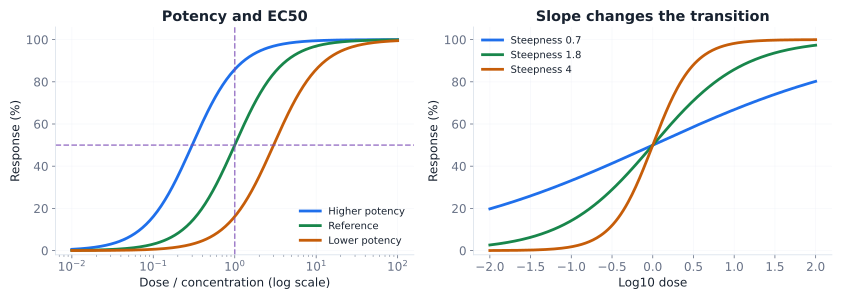
The extended logit curve from last week links log-dose with response shape; model choice requires mechanistic and empirical justification.
The Hill coefficient \(n_{\mathrm{H}}\) directly scales the slope factor (steepness) of the sigmoid.
Mechanistic insight: The logistic curve is not just an empirical smoothing function—it arises naturally when ligand-receptor equilibrium is plotted against log-concentration. \(n_{\mathrm{H}} > 1\) indicates positive cooperativity, while \(n_{\mathrm{H}} < 1\) reflects negative cooperativity or multiple receptor subtypes.
Dose planning determines what can be estimated
Avoid fitting a curve to the wrong region
01Include a meaningful controlEstablish baseline or background toxicity.
02Bracket the transitionSample both lower and higher response regions, where feasible; do not require a universal 30–70% range.
03Replicate and account for exposureDose spacing, sample size, time and measurement error affect certainty.
An apparent EC50 can be extrapolation if the measured doses never bracket half-response.
NOAEL / LOAEL versus modeled BMD
One comes from dose groups; one from a curve
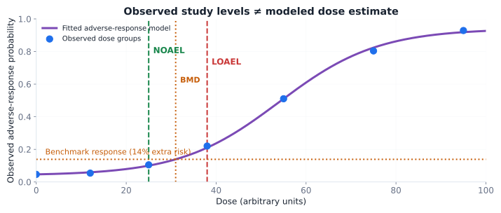
NOAEL/LOAEL are study-dependent observed dose levels. BMD (benchmark dose) is fitted at a specified benchmark response; BMDL is a lower confidence bound for that modeled dose.
Exposure duration changes the interpretation
One dose, more than one answer
Acute
Single/short exposure
Different endpoints than prolonged dosing
Repeated-dose
Weeks/months
Accumulation and adaptation may alter response
Clinical translation
Species and protocols
Do not equate experimental safety thresholds directly with a safe patient dose
A toxicity statement is incomplete without dose, route, exposure duration, species/population and endpoint.
Meta-analysis
Part V
Human knowledge accumulated
Why consensus provides a stronger evidence.
From individual studies to cumulative evidence
Systematic review → quantitative synthesis
01Define a systematic questionPopulation, intervention/exposure, comparator, outcome and study design.
02Search and appraiseInclude eligible studies transparently; assess bias and publication/selective reporting.
03SynthesizeCombine comparable estimates and examine between-study differences.
A meta-analysis is a calculation inside a systematic review, not a substitute for one.
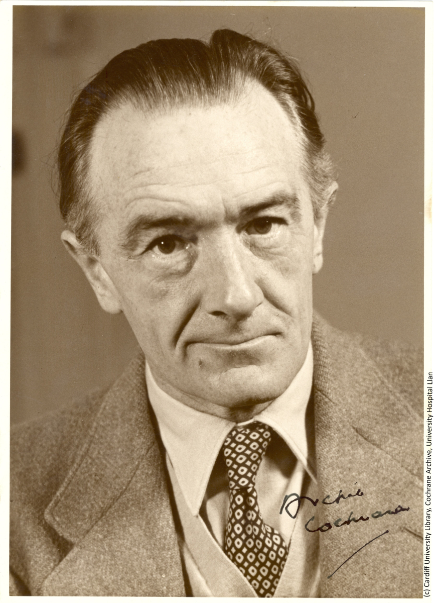
Archie Cochrane
Gene V. Glass
How to read a forest plot
Each line = one study, diamond = pooled estimate
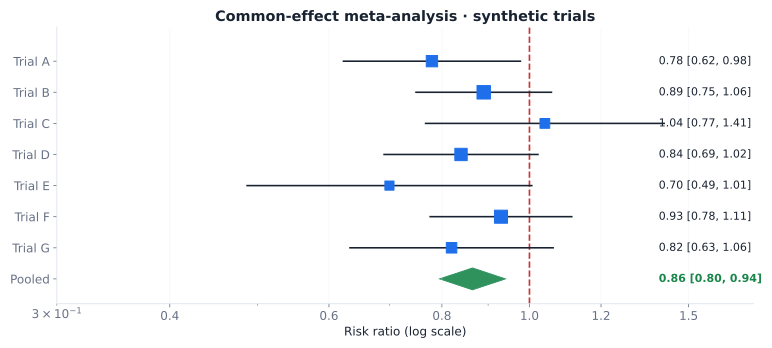
Squares represent study estimates; square area reflects precision weight. Horizontal lines are 95% CIs. The dashed line at RR=1 is the no-effect reference.